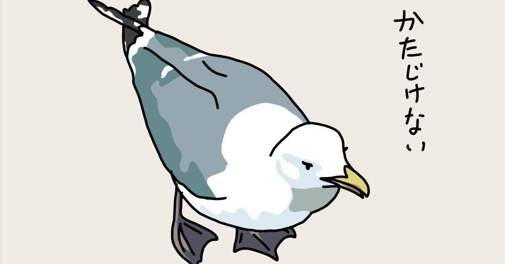

口が二つあったらいいのに。
もしそうだったら、美味しい食事を楽しみながら友人とお喋りできるし、片方の口で栄養補給しながらもう一方をハミガキできるし、なにより気の合う歯科衛生士さんと談笑しながら喋ってない方の歯の検診をしてもらうことだってできる。
喋ってない方の歯を検診？ へっ？
と思われた方もいるかもしれない。これは情報を小出しにした僕に全責任がある。
幼少から通っている歯科で、いつの間にか僕の担当になっていた歯科衛生士さんとの談笑が止まらない。
当然、僕は口を開いているので、「はふ、へへへ」みたいななんとも気色悪いことになっているのだが、それでも僕たちの会話はとめどなく続いてしまうのだ。
僕には何かにつけてつまらない冗談を言ってしまう癖があるのだが、そんな戯言にも全て純度120％のお笑いで返してくれるし、なんならそのワードセンスに「ただ口を開くだけ」という誰でもできるミッションすら僕はうまくこなせなくなってしまうのだ。
この前なんて、「海人さんは虫歯よりも歯周病になりやすいのでご注意を！歯周病は痛みが出にくく気づいたら進行が進んでいる、なんてこともよくあるので」とアドバイスを受けたので、「いわばスマホのサイレントモードみたいな感じですかね」と返すと、「厄介な先輩からすぐ返さなきゃいけないLINEがサイレントの時に入っているようなものですよ。肝冷やしますよね。それと一緒なんです」と真面目な顔を作って言うものだから、その先もスマホの受信モードに例えて虫歯と歯周病の違いを丁寧に教えてくれた。
それを全部聞き終えた時、僕は不思議な高揚感に包まれたと同時に、こんなに面白い人を、しかも(これはあくまで予想だが)年齢も近い異性に初めて出会えた衝撃もあり、深く感動してしまったのだった。
そんな出会いに感謝しつつも、僕は彼女に手間ばかりかけさせてしまっている。
というのも、どうやら僕の歯は歯石が溜まりやすいらしく、その点において彼女に苦労をかけているので、最近は念入りに歯を磨くようにしている。
決して彼女を失望させてはならない。
「いつもおてひゅう(お手数)かけまふ」と口を開きながら労をねぎらうが、額に汗しながら「化石みたいな歯石の人はまるで化石堀りの要領で歯石を発掘してるんで、それに比べたら全然ダイジョブっす！」と部活の後輩みたいなノリで答える彼女を救えるのは、誰でもない僕なのだ。
ああ。口が二つあればいいのに。
あっ、でももし新しく追加された口の歯にサイレントで歯周病がきたら嫌だな。もっと歯磨かないと。